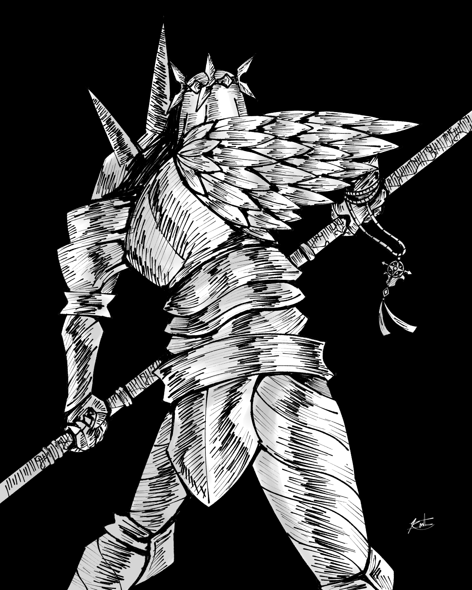

Uthred Dumnonia
"The Wither"
Description
"Mother Mila, pale in sorrow Hear my vows Forgive me for I have sinned Grant me the path to thee And I shall mend the ruin I wrought" known as "The Wither", Uthred is a devout knight who follows Mother Mila, the Goddess of Life. A veteran commander and a skilled tactician, he approaches every battle with patience and discipline. Despite his intimidating armor and imposing stature, he is gentle toward people, dedicating his life protecting them. But there is a quiet sorrow beneath his veil, as if prayers is meant for something long forgotten.
History